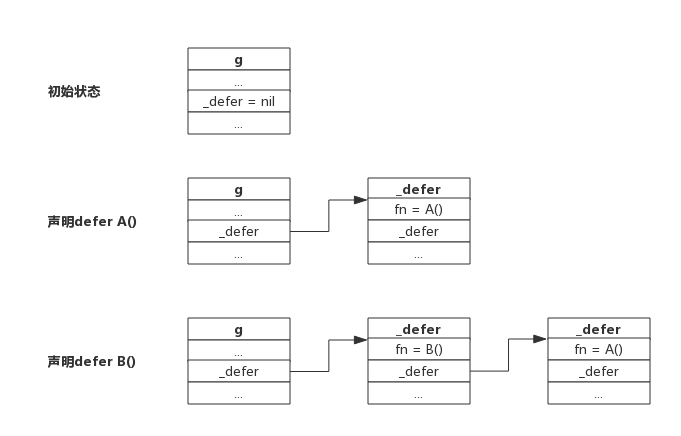

defer 语句会将函数推迟到外层函数返回之后执行。
即defer后面的函数在defer语句所在的函数执行结束的时候会被调用
defer后面必须是函数调用语句，不能是其他语句，否则编译器会出错
package main
import "fmt"
func main() {
defer fmt.Println("world")
fmt.Println("hello")
}
输出结果
hello
world
Golang官方博客里总结了defer的行为规则，只有三条，我们围绕这三条进行说明。
官方给出一个例子，如下所示：
func a() { i := 0
defer fmt.Println(i)
i++
return
}
defer语句中的fmt.Println()参数i值在defer出现时就已经确定下来，实际上是拷贝了一份。后面对变量i的修改不会影响fmt.Println()函数的执行，仍然打印"0"。
注意：对于指针类型参数，规则仍然适用，只不过延迟函数的参数是一个地址值，这种情况下，defer后面的语句对变量的修改可能会影响延迟函数。
这个规则很好理解，定义defer类似于入栈操作，执行defer类似于出栈操作。
设计defer的初衷是简化函数返回时资源清理的动作，资源往往有依赖顺序，比如先申请A资源，再跟据A资源申请B资源，跟据B资源申请C资源，即申请顺序是:A-->B-->C，释放时往往又要反向进行。这就是把deffer设计成FIFO的原因。
每申请到一个用完需要释放的资源时，立即定义一个defer来释放资源是个很好的习惯。
定义defer的函数，即主函数可能有返回值，返回值有没有名字没有关系，defer所作用的函数，即延迟函数可能会影响到返回值。
若要理解延迟函数是如何影响主函数返回值的，只要明白函数是如何返回的就足够了。
有一个事实必须要了解，关键字return不是一个原子操作，实际上return只代理汇编指令ret，即将跳转程序执行。比如语句return i，实际上分两步进行，即将i值存入栈中作为返回值，然后执行跳转，而defer的执行时机正是跳转前，所以说defer执行时还是有机会操作返回值的。
举个实际的例子进行说明这个过程：
func deferFuncReturn() (result int) { i := 1
defer func() {
result++
}() return i}
该函数的return语句可以拆分成下面两行：
result = i
return
而延迟函数的执行正是在return之前，即加入defer后的执行过程如下：
result = i
result++
return
所以上面函数实际返回i++值。
关于主函数有不同的返回方式，但返回机制就如上机介绍所说，只要把return语句拆开都可以很好的理解，下面分别举例说明
一个主函数拥有一个匿名的返回值，返回时使用字面值，比如返回"1"、"2"、"Hello"这样的值，这种情况下defer语句是无法操作返回值的。
一个返回字面值的函数，如下所示：
func foo() int { var i int
defer func() {
i++
}() return 1}
上面的return语句，直接把1写入栈中作为返回值，延迟函数无法操作该返回值，所以就无法影响返回值。
一个主函数拥有一个匿名的返回值，返回使用本地或全局变量，这种情况下defer语句可以引用到返回值，但不会改变返回值。
一个返回本地变量的函数，如下所示：
func foo() int { var i int
defer func() {
i++
}() return i
}
上面的函数，返回一个局部变量，同时defer函数也会操作这个局部变量。对于匿名返回值来说，可以假定仍然有一个变量存储返回值，假定返回值变量为"anony"，上面的返回语句可以拆分成以下过程：
anony = i
i++
return
由于i是整型，会将值拷贝给anony，所以defer语句中修改i值，对函数返回值不造成影响。
主函声明语句中带名字的返回值，会被初始化成一个局部变量，函数内部可以像使用局部变量一样使用该返回值。如果defer语句操作该返回值，可能会改变返回结果。
一个影响函返回值的例子：
func foo() (ret int) { defer func() {
ret++
}() return 0}
上面的函数拆解出来，如下所示：
ret = 0
ret++
return
函数真正返回前，在defer中对返回值做了+1操作，所以函数最终返回1。
本节我们尝试了解一些defer的实现机制。
源码包src/src/runtime/runtime2.go:_defer定义了defer的数据结构：
type _defer struct {
sp uintptr //函数栈指针
pc uintptr //程序计数器
fn *funcval //函数地址
link *_defer //指向自身结构的指针，用于链接多个defer}
我们知道defer后面一定要接一个函数的，所以defer的数据结构跟一般函数类似，也有栈地址、程序计数器、函数地址等等。
与函数不同的一点是它含有一个指针，可用于指向另一个defer，每个goroutine数据结构中实际上也有一个defer指针，该指针指向一个defer的单链表，每次声明一个defer时就将defer插入到单链表表头，每次执行defer时就从单链表表头取出一个defer执行。
下图展示一个goroutine定义多个defer时的场景： 
从上图可以看到，新声明的defer总是添加到链表头部。
函数返回前执行defer则是从链表首部依次取出执行，不再赘述。
一个goroutine可能连续调用多个函数，defer添加过程跟上述流程一致，进入函数时添加defer，离开函数时取出defer，所以即便调用多个函数，也总是能保证defer是按FIFO方式执行的。
源码包src/runtime/panic.go定义了两个方法分别用于创建defer和执行defer。
deferproc()： 在声明defer处调用，其将defer函数存入goroutine的链表中；
deferreturn()：在return指令，准确的讲是在ret指令前调用，其将defer从goroutine链表中取出并执行。
可以简单这么理解，在编译在阶段，声明defer处插入了函数deferproc()，在函数return前插入了函数deferreturn()。
defer定义的延迟函数参数在defer语句出时就已经确定下来了
defer定义顺序与实际执行顺序相反
return不是原子操作，执行过程是: 保存返回值(若有)-->执行defer（若有）-->执行ret跳转
申请资源后立即使用defer关闭资源是好习惯